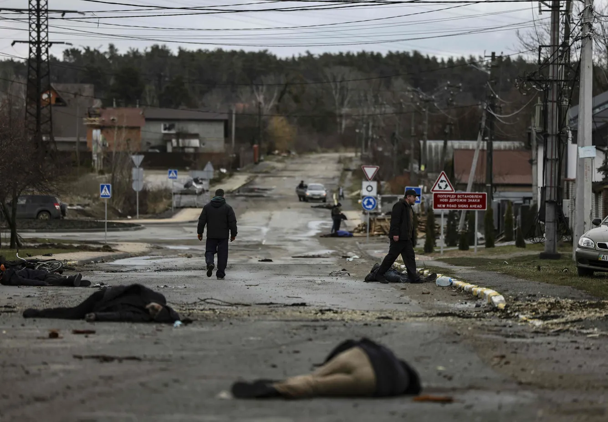
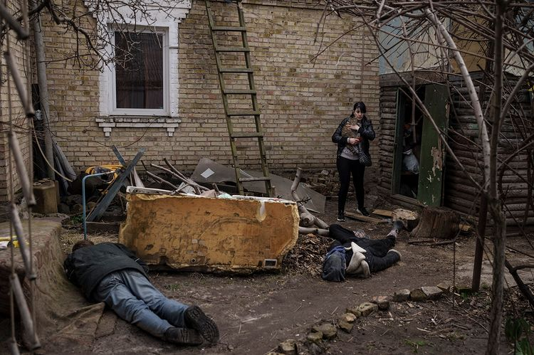
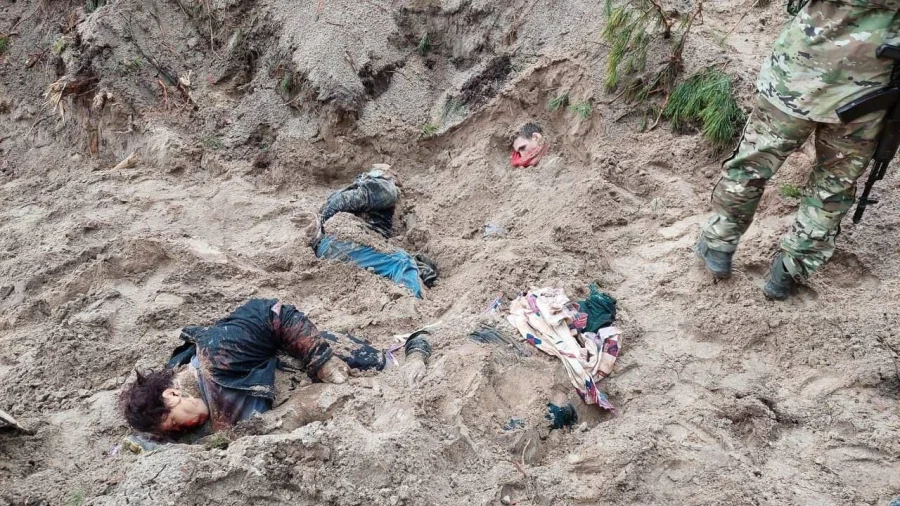
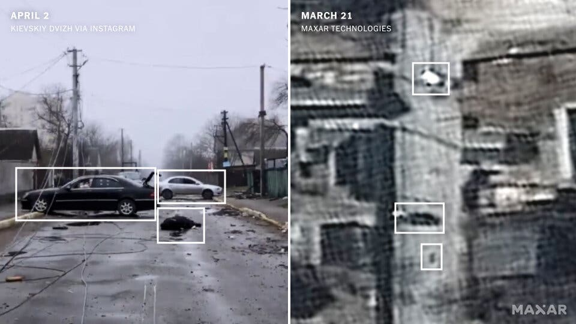
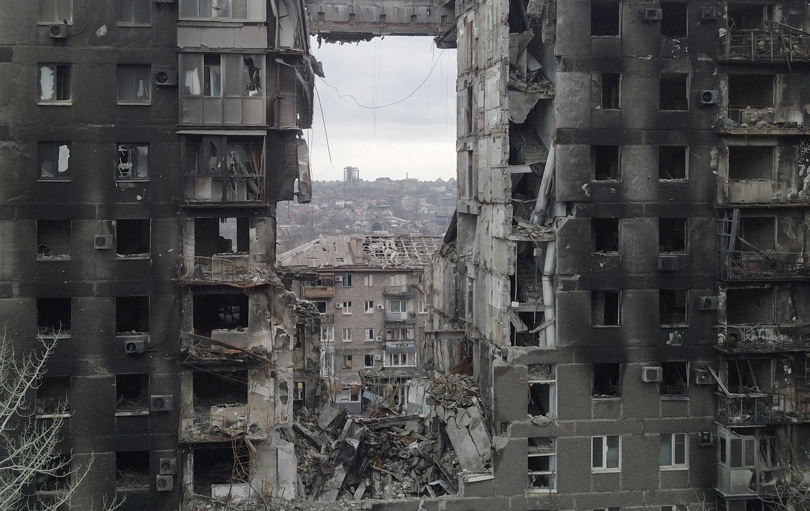

Februara 24. je ruska vojska započela rat u Ukrajini. Pod izgovorom “zaštite stanovnika Donbas regiona od genocida”, ruska vojska siluje i ubija hiljade civila.
Samo po zvaničnim podacima Ujedinjenih Nacija od 15. aprila broj ubijenih civila je 2435 osobe, od kojih su 184 deca. Ali, u realnosti je broj žrtava značajno veći: samo u Mariupolju se broj žrtava procenjuje na preko 20000, po izjavi gradonačelnika Vadima Bijčenko, a u okolini Kijeva je pronađeno preko 900 leševa civila od kojih preko 412 u naselju Buča, a pretraga još nije završena.
Trećeg aprila se ruska vojska povukla sa teritorije oko Kijeva ostavljajući užasne prizore za sobom. Za sada je posle oslobođenja pronađeno i prosleđeno ekspertima sudske medicine preko 900 mrtvih tela. Evo nekoliko slika:
Ruska strana je pokušala da kaže kako su se leševi pojavili tek nakon što se ruska vojska povukla, ali postoje dokazi da je to laž:
Znamo ove podatke iz Buče jer je Kijevsku oblast napustila ruska vojska. Ali, postoje gradovi okruženi ruskim snagama u kojima je situacija višestruko gora. Jedan od takvih gradova je Mariuoplj.
Mariupolj je jedna od najznačajnijih luka, sa oko pola miliona stanovnika pre rata. Danas je grad opkoljen, a prema satelitskim podacima razrušeno preko 90% grada. Preko 20 hiljada stanovnika je poginulo. Preostali stanovnici, koji nisu uspeli da napuste grad, moraju da preživljavaju bez vode, grejanja, struje i humanitarne pomoći koju ruska vojska nedeljama nije puštala u grad. Postoje podaci i da ulicama kruže mobilni krematorijumi kako bi se sakrili vojni zločini od javnosti.
Nije bitno koji su razlozi i povodi ovog rata, bitno je da je ubistvo bilo koga, a pogotovo civila nedopustivo. Ako smatrate da rat mora da se zaustavi, prestanite da ćutite.